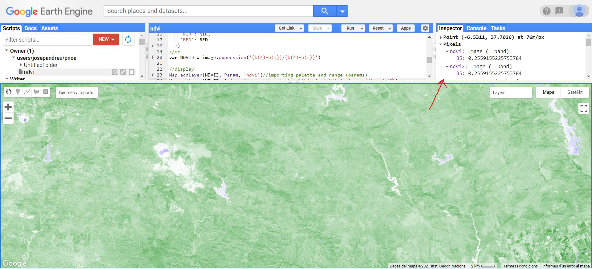
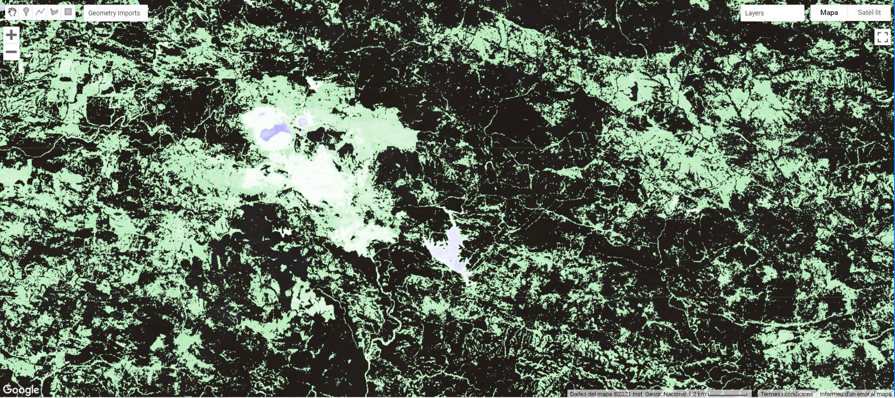

NDVI calculation and masking Lansat 8 images in Google Earth Engine code editor in JS
This tutorial covers how to apply the NDVI algorithm and masking the results from Landsat 8 images using the Google Earth Engine IDE,
providing a powerful and fast way to analyze and visualize geospatial data.
The normalized difference vegetation index (NDVI) is a graphical indicator used in remote sensing assessing whether or not the target being observed contains live green vegetation. The NDVI is calculated based on the information given by the red and near infrared regions, with the following formula:
Taking into account that the NDVI always produces a number between -1 and 1, because of how it is calculated, we could say that an NDVI < 0 represents artificial cover or areas with water, NDVI between 0 and 0.3 represents bare soil, and a high NDVI value represents vegetation.
Masking is the process in which certain image parts are marked for exclusion from further analysis. The uses of applying a mask extracted from NDVI can be multiple. For example, if you want to do a geological study it may be interesting to work only with areas with little or no vegetation. On the other hand, if you want to study the types of vegetation, it may be interesting to work only with areas with vegetation.
Filtering data
The first step is to import the image collection. In this example we will use a Lansat 8 image Collection 1 Tier 1 TOA Reflectance. More information:
Earth Engine Data Catalog.
var L8 = ee.ImageCollection("LANDSAT/LC08/C01/T1_TOA");
//Filtering data
var image = L8.filterBounds(ee.Geometry.Point(-6.59,37.70))
.filterMetadata('CLOUD_COVER','less_than', 1)
.filterDate('2019-05-01', '2020-01-01')
.first();
NDVI calculation and displaying
This example shows three ways to calculate NDVI and two ways to display results, all of which are valid.
//Calculating and diplaying NDVI
var RED = image.select('B4');
var NIR = image.select('B5');
var NDVI = NIR.subtract(RED).divide(NIR.add(RED));
//or
var NDVI2 = image.expression(
'(NIR-RED)/(NIR+RED)',
{
'NIR': NIR,
'RED': RED
})
//or
var NDVI3 = image.expression('(b(4)-b(3))/(b(4)+b(3))')
//display
var Param = {"opacity":1,"bands":["B5"],"min":-1,"palette":["0000ff","ffffff","00b60e"]};
Map.addLayer(NDVI3, Param, 'ndvi'); //importing palette and range (Param)
//or
Map.addLayer(NDVI3, {min: -1, max: 1, palette: ['blue', 'white', 'green']},'ndvi2');
Remember to change the range manually to -1 and 1 in case you do not indicate it in the code.

At the top right of the screen you can see the inspector, which allows you to check the values and location of each pixel by clicking on the map.
NDVI from Landsat 8
Masking
To achieve the desired masks has been used the relational methods greater than or equal (.gte) and less than (.lt).
//Masking
// Mask the image pixels in the range of (0.3 to 1) from ndvi
//gte = gtreater than or equal
var VegMasked = image.updateMask(NDVI.gte(0.3));
Map.addLayer(VegMasked);
// Mask the image pixels in the range of (-1 to 0.3) from ndvi
//lt = less than
var NonVegMasked = image.updateMask(NDVI.lt(0.3));
Map.addLayer(NonVegMasked);
And once you get the results you can work with the mask of interest ignoring the unnecessary pixels.

Landsat 8 image excluding the non vegetation pixels above the NDVI layer.